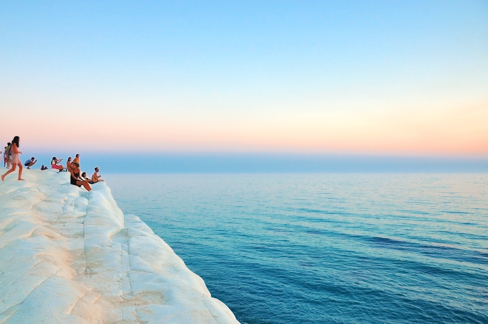

Explore the Water
Each month we select a featured destination to encourage our members to visit.
This month we are diving into the waters around the Mediterranean!!!

The Mediterranean is a water lovers paradise. Clear blue water and calm seas make it the perfect travel destination.
Activities include swimming, diving, and boating. The fresh catch is also something to relish while visiting this part of the world.